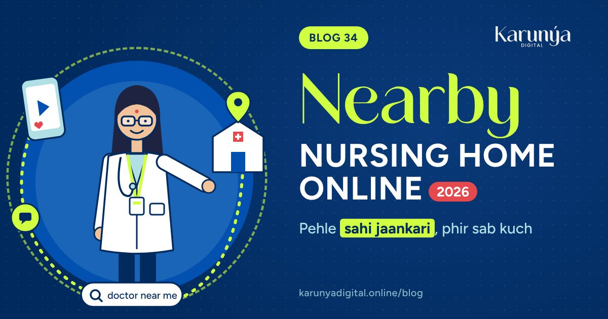

In most Indian towns, a "nursing home" is not an old-age home. It is a small private hospital, often 10 to 50 beds, run by one or two doctors: a maternity home, a surgical centre, an orthopaedic or general nursing home. Families find these places on Google Maps, ask relatives on WhatsApp and check reviews before they call. If you run one, you may be searching for a digital marketing agency for nursing homes that understands this, and the new NMC rules.
This guide explains what such an agency should do, what it must avoid after 6 October 2026, and how to choose one.
Why nursing homes need a different kind of agency
A nursing home sits between a single-doctor clinic and a large hospital. That creates three challenges:
- The owner is usually also the main doctor. Promotion of the institution can easily turn into promotion of one doctor, which the NMC guidelines do not allow.
- Services change often. If Google shows an old number or timings, patients go elsewhere.
- Money and time are limited. There is no in-house marketing team, so the agency must work with very little of the doctor's time.
A nursing home needs a simple, steady, rule-safe setup more than big campaigns.
What the NMC 2026 rules mean for nursing homes
The NMC's Guidelines on Ethical Advertising and Public Communication, released on 6 October 2026, cover doctors and the healthcare institutions they work in. Medical Dialogues summarised two points that matter most for nursing homes:
- Doctors may not use their photographs for self-advertisement, solicitation or promotional publicity. A doctor's own photo on a signboard or letterhead is treated as unethical conduct.
- A factual doctor directory on a hospital website (names, qualifications, speciality, registration, availability) is treated differently from paid advertising.
Councils are already acting. On 16 November 2026, UNI reported that the Jharkhand State Medical Council gave doctors and nursing homes one week to remove promotional advertisements carrying doctors' photographs, warning of financial penalties and suspension of registration for three to six months.
Nursing homes in Uttar Pradesh also face close government checks. In February 2026, Medbound Times and Devdiscourse reported that the UP government had cancelled the licences of 178 private hospitals after about 500 complaints (59 were later reinstated after hearings), with notices sent to 1,542 hospitals.
| Allowed for a nursing home | Not allowed |
|---|---|
| Name, address, phone, timings | Doctor's photo used for promotion on hoardings, flyers or ads |
| Departments, beds, facilities, equipment | "Best nursing home", "No. 1" or "guaranteed" claims |
| Emergency and labour room availability, stated factually | Patient testimonials or "recovery stories" |
| Fees as factual information | Discount, free-camp or package offers to pull patients |
| Health education posts and Reels | Before/after photos |
| A factual doctor directory on the website | Buying reviews or asking for 5 stars in return for anything |
Our guide to the NMC new guidelines for doctors on social media explains each rule in plain language.
What a digital marketing agency for nursing homes should do
A good nursing home marketing agency focuses on two jobs: helping patients find you, and helping them understand their health. A sensible monthly scope:
| Work area | What it should include | Watch out for |
|---|---|---|
| Google Business Profile | Correct name, category, address, phone, emergency hours, real photos of the building and wards with no patients | Fake reviews, keyword-stuffed business names |
| Website | Simple pages for each service, facilities, a factual doctor directory, directions, click-to-call | "Best nursing home in the city" headlines |
| Local SEO | Hindi and English service pages, area names, fast mobile pages | Guaranteed ranking promises |
| Social media | Patient education, health days, facility updates, how to reach you at night | Reels that promote one doctor, patient stories |
| Scripts and shoot guidance | Short Hindi or Hinglish scripts the doctor or staff can record on a phone | Filming patients, deliveries or procedures |
| Approval and compliance | Every post checked against NMC rules and approved by the nursing home | Posting without your sign-off |
| Monthly report | Calls, direction requests, profile views, website visits, top searches | Fees linked to the number of patients |
If you also run a larger multispeciality setup, our hospital marketing agency guide covers department pages and approvals across many doctors.
How patients search for a nursing home
Most searches happen on a phone, often in a hurry, and often by a family member rather than the patient:
- "Near me" searches such as "nursing home near me", "maternity home near me" or "24 hour nursing home near me".
- Area searches with a road, colony or landmark name plus "nursing home" or "hospital".
- Hindi and Hinglish searches such as "paas ka nursing home" or "delivery ke liye nursing home".
- Service searches such as "normal delivery nursing home", "piles operation hospital" or "fracture hospital".
- Out-of-town searches by families in nearby villages before they travel.
Each needs a correct answer on Google first. Reels come second.
Local search checklist for nursing homes
Use this to check your current setup, or any agency's plan:
- One verified Google Business Profile in the nursing home's registered name, owned by you, not the agency.
- NAP consistency. Name, address and phone must match on Google, your website, directories and social pages.
- The right category and hours. If the emergency or labour room runs 24 hours, say so, and keep the number that actually gets answered at night.
- Service pages on your website, written in simple language, with a factual doctor directory.
- Directions. A landmark, the main road and parking details, plus real photos of the entrance.
- Reviews handled within NMC rules. Reply politely, never mention a patient's treatment, and never offer anything for a review. See our post on Google reviews for doctors under NMC rules for safe reply examples.
Our Google Business Profile guide for doctors walks through the profile setup step by step.
Nursing home marketing services: local agency or specialist?
A general local agency knows your town but may not know NMC rules; a healthcare specialist knows the rules but may be in another city. Ask both: Which posts will you refuse to make? Who checks medical accuracy? Will the accounts stay in our name? Our guide on how to choose a digital marketing agency for your clinic has a full scoring checklist, and freelancer vs agency for doctors helps if you are comparing a single freelancer too.
Red flags in a nursing home agency's proposal
Say no if you see:
- Hoardings, flyers or ads built around the doctor's photo.
- Patient testimonial videos or "thank you doctor" Reels.
- Before/after photos of any treatment.
- "Best", "No. 1", "most trusted" or "100% safe delivery" claims.
- Free camp, discount or package ads aimed at bringing in patients.
- Pay-per-patient or pay-per-lead fees.
- Bought reviews, or AI-made patient stories.
- Google, Instagram or website accounts created in the agency's name.
Before you sign, also ask how they will show your doctors without promoting one person, whether they send a crew or guide your staff to record, and how you can exit the contract.
Where Karunya Digital fits
Karunya Digital is a healthcare marketing agency based in Varanasi, on Taktakpur Road near Mahavir Mandir, founded by Bhanu Pratap Rai. We work only with doctors, dentists and hospitals, and have 50+ doctor clients. Our office is in Varanasi only; we work with nursing homes in other cities of UP, Bihar and the rest of India remotely, over calls and WhatsApp.
For a nursing home, we plan education topics, write scripts in simple Hindi or Hinglish, give shoot guidance so your doctors or staff can record on a phone, and handle editing, captions, posting, Google Business Profile, local SEO and monthly strategy. We don't provide camera crews. Every post is checked against the NMC guidelines and goes live only after you approve it. If you run a maternity nursing home, our gynaecology marketing page shows the education topics we usually plan; for bone and joint work, see our orthopaedic page.
We don't publish fixed prices. After a short call, we share a plan and fixed monthly fee that fits your nursing home's size, services and city. See our services, read our digital marketing agency for doctors guide, or message us on WhatsApp.
Frequently asked questions
Is a nursing home treated like a hospital under the NMC advertising rules? The guidelines apply to registered doctors and the healthcare institutions they work in, so nursing homes should follow the same principles as hospitals: share neutral, checkable information, and don't solicit patients, claim superiority or guarantee results. Check your state council's notices too.
Can a nursing home put the doctor's photo on hoardings or flyers? The NMC bars doctors from using their photographs for self-advertisement or promotional publicity, and the Jharkhand State Medical Council has already told nursing homes to remove such ads. Use the nursing home's name, services and contact details instead.
How much does a digital marketing agency for nursing homes cost? It depends on the number of services, platforms, how much content you need and whether you need a new website. Ask for a fixed monthly fee with a written scope, and avoid any fee linked to patient numbers.
What should a nursing home fix first online? Start with a correct, verified Google Business Profile with a working phone number, timings and emergency details, then a simple mobile website with service pages. Social media comes after the basics are right.
Can we hire an agency in another city? Yes. Most of the work, such as scripts, editing, posting and Google profile updates, happens online. Make sure the agency understands your local language and how patients in your area search.
Check your nursing home's online presence
Take our free 2-minute Google + Instagram check to see your top fixes. Or message us on WhatsApp, or call +91 73176 59337.
Sources: Medical Dialogues: NMC prohibits promotional use of doctors' photographs, bars paid rankings (9 Oct 2026) · UNI: Jharkhand doctors face registration suspension over ads (16 Nov 2026) · Medbound Times: UP cancels licences of 178 private hospitals (Feb 2026) · Devdiscourse: Uttar Pradesh crackdown on private hospitals (Feb 2026)